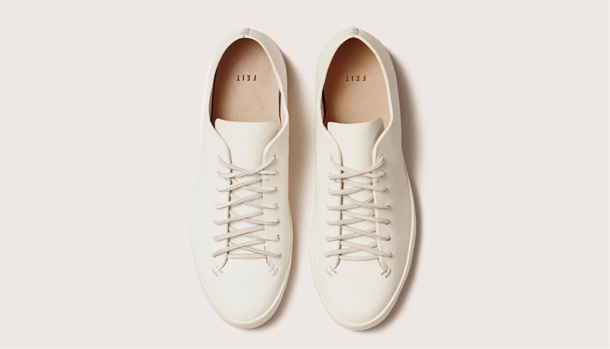

Уход
за обувью

Основные правила:
Правило №2
Правильный размер
Важно!
*Регулярный уход за обувью, не только продлевает ее срок службы, но и сохраняет ее внешний вид и функциональность.
Ниже приведены некоторые из лайфхаков, которые помогут вам научиться правильно ухаживать за обувью.
Носить качественную обувь, которая будет долго служить и при этом сохранять свою форму и красоту — это выгодно не только для нашего бюджета, но и для экологии. Ведь, чем дольше мы используем свою обувь, тем меньше она накапливается на свалках и тем меньше приходится тратить ресурсов на ее производство. В этой статье мы собрали лайфхаки, которые помогут вам осознанно использовать обувь, сохранить ее красоту и увеличить ее срок службы.
Выбор обуви правильного размера
Избегайте ношения обуви, которая вам мала или большая. Это не только неприятно, но и может привести к деформации обуви и даже проблемам со здоровьем. При выборе обуви обратите внимание на таблицу размеров и измерьте свои ноги, чтобы выбрать идеальный размер.
Обувь нужно носить по назначению
Носите летнюю обувь летом, зимнюю — зимой. Избегайте ношения летней обуви в зимнее время, и наоборот. Это поможет сохранить материалы обуви и предотвратить ее ранний износ.
Уход за обувью
Не забывайте ухаживать за обувью. После каждого использования протирайте ее сухой тканью или щеткой. Если обувь грязная, то ее нужно очистить от грязи и пыли перед тем, как положить на полку. Избегайте мытья обуви в стиральной машине или погружения в воду — это может повредить материалы.
Сушка обуви
Если ваша обувь промокла, то не сушите ее на батарее. Это может привести к деформации материалов и ухудшить ее вид. Используйте специальные средства для сушки обуви, такие как дезодоранты.
Хранение обуви
Храните обувь в сухом месте, защищенном от солнечных лучей и не складывайте ее в тесном пространстве. Это поможет сохранить ее форму и избежать деформации. Храните обувь в специальных коробках или на полках, чтобы избежать пыли и грязи.